Sobre o material
O que você vai aprender
Cursos, mentoria e conteúdo especializado para veterinários que querem interpretar exames com confiança, com quem vive isso na bancada todos os dias.
7 e-books · 6 guias de interpretação rápida · 4 combos · 3 áreas de mentoria · 2 cursos · blog educativo.
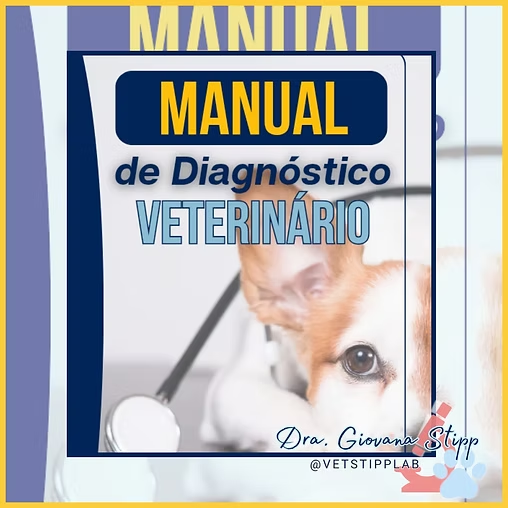
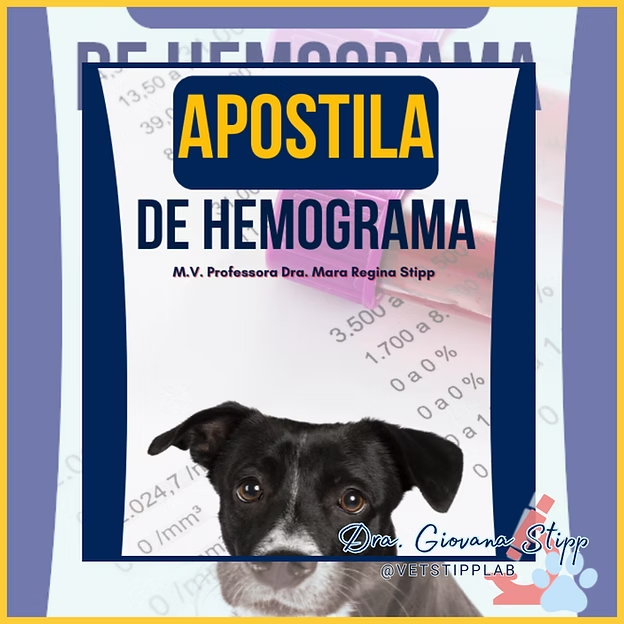
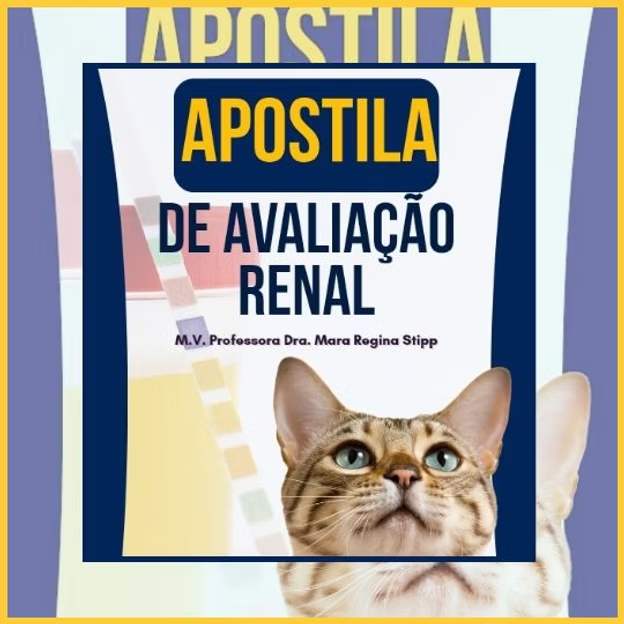
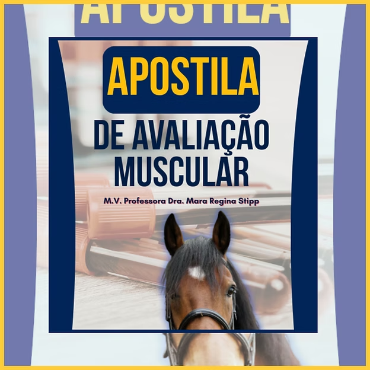
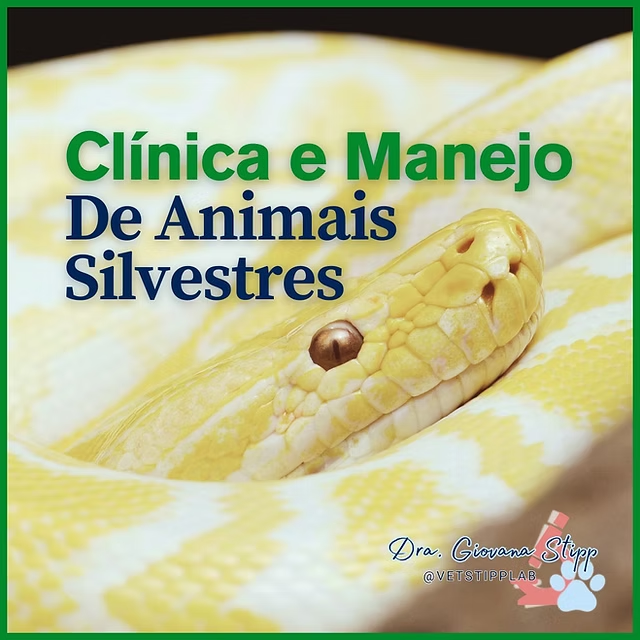
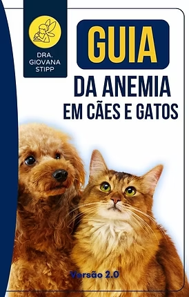
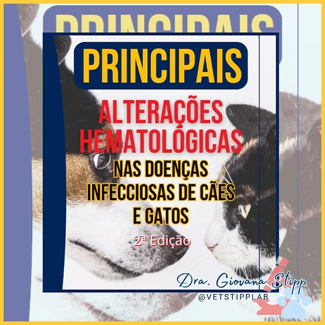
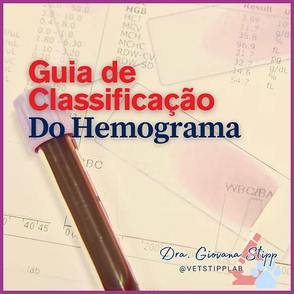
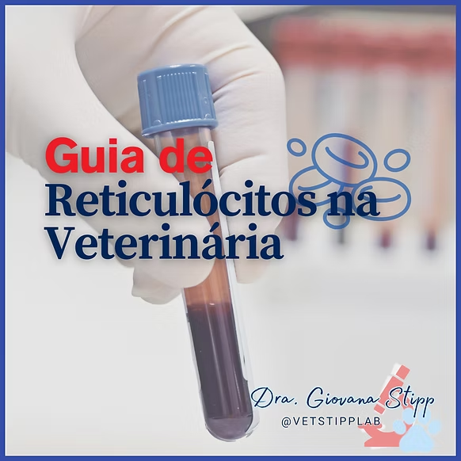
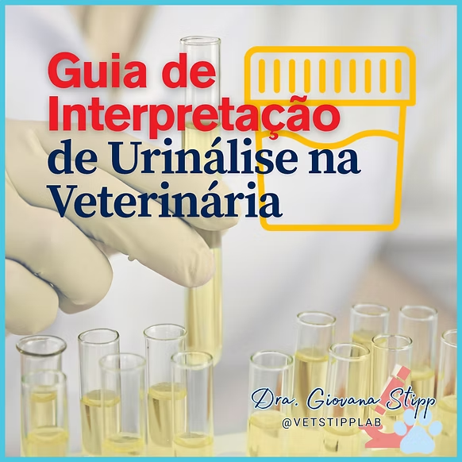
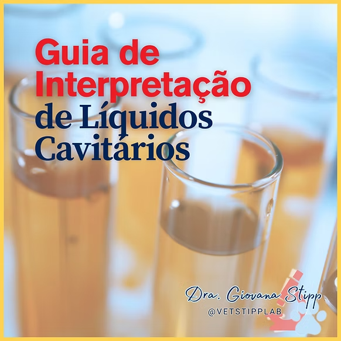
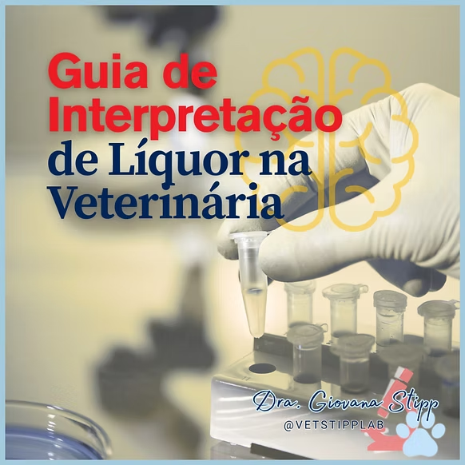
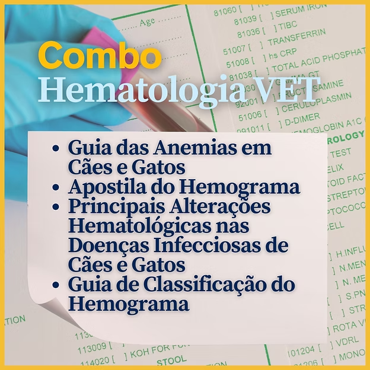
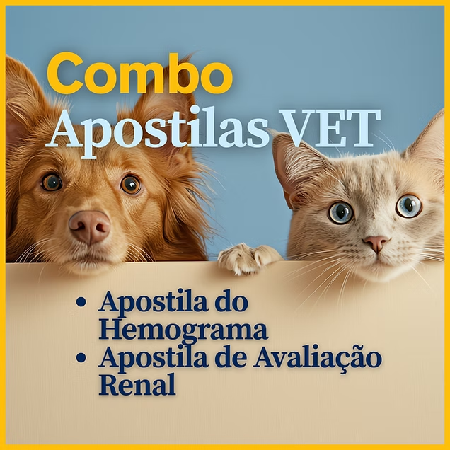
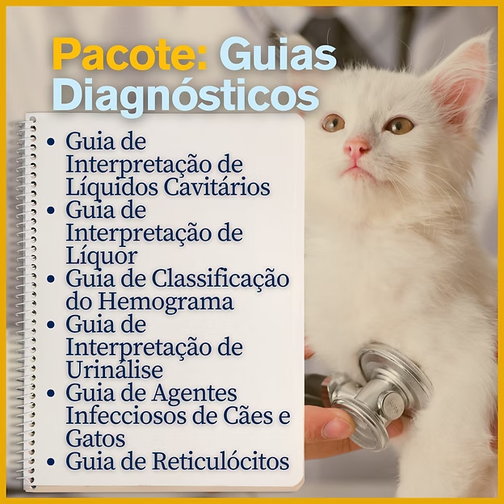
Tudo o que você precisa para sair da dúvida e ir para a confiança.
Sabe aquela insegurança quando vem um hemograma diferente? Ou quando o laudo não fecha com o quadro clínico? A mentoria foi criada para resolver exatamente isso, com casos reais, raciocínio clínico-laboratorial e orientação direta.
Um mergulho direto no tema que mais gera dúvida na rotina. Do mecanismo à conduta, passo a passo.
O conteúdo mais completo de hematologia veterinária aplicada à clínica de pequenos animais. Para veterinários que querem parar de "adivinhar" e começar a interpretar com método.
"Depois da mentoria com a Giovana, minha forma de interpretar o hemograma mudou completamente. Agora eu consigo relacionar o laudo com o quadro clínico de verdade, não fico só copiando o que o sistema sugere."
"O mini-curso de anemias foi exatamente o que eu precisava. Conteúdo denso, didático e aplicável. Em menos de uma semana já estava usando o fluxograma nos meus atendimentos."
"A Giovana tem um dom de tornar complexo em simples. O curso de hematologia me deu um framework de raciocínio que uso todo dia. Vale muito mais do que o investimento."
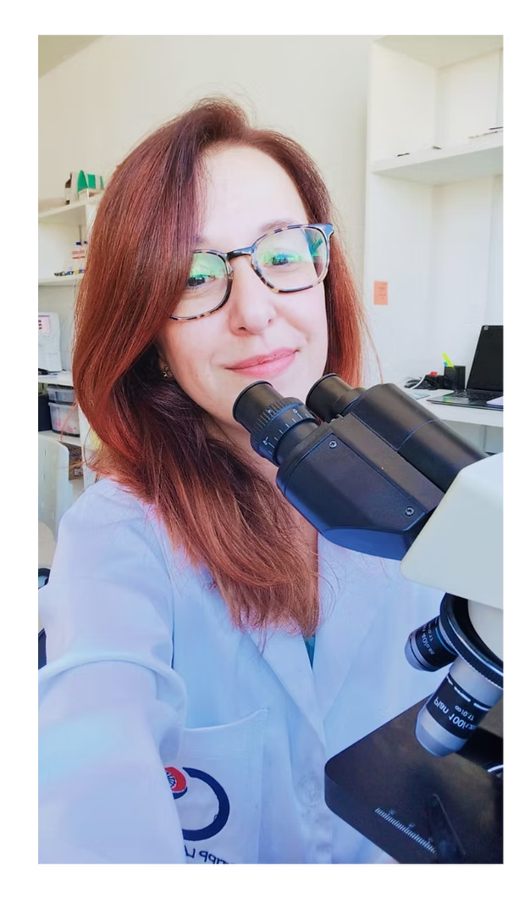
"Meu objetivo é que todo veterinário olhe para um hemograma e sinta confiança, não ansiedade."
A Dra. Giovana Stipp é médica veterinária especialista em patologia clínica veterinária, com ênfase em hematologia. Fundou o Stipp Lab em 2019 em João Pessoa, PB, onde atua diariamente na análise e interpretação de exames laboratoriais de cães e gatos.
Com formação pelo Mestrado Profissional em Clínicas Veterinárias pela UEL e publicações científicas na área, ela une o rigor acadêmico com a aplicabilidade prática que só quem trabalha na bancada todos os dias consegue oferecer.
Seu trabalho educativo nasce de uma observação simples: muitos veterinários competentes ficam inseguros na hora de interpretar exames. O conteúdo dela existe para fechar essa lacuna, com linguagem direta, casos reais e metodologia sistematizada.
Conteúdo denso, mas nunca confuso. Cada conceito é apresentado de forma que você consiga aplicar no mesmo dia.
Tudo baseado em evidências atualizadas e na prática real do laboratório, sem achismos, sem simplificações que distorcem.
O que não serve para a rotina clínica não entra. Cada conteúdo foi pensado para resolver problemas reais do dia a dia do veterinário.
Escolha o ponto de entrada ideal para você — do mini-curso à mentoria individual. O primeiro passo é agora.
"Clareza, rigor e aplicabilidade"